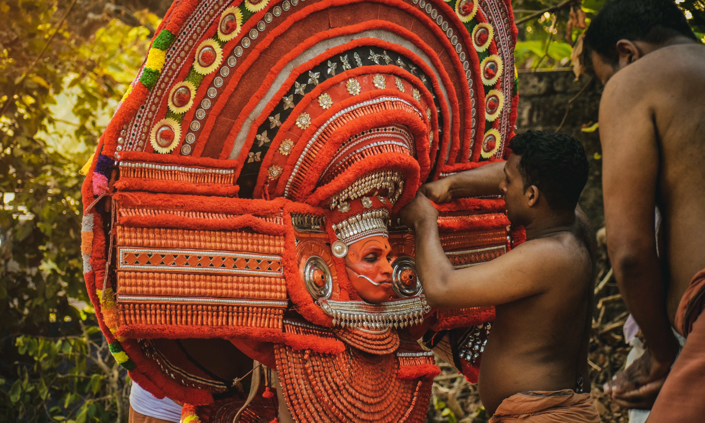

Theyyam
Theyyam is a famous ritual art form that originated in North Kerala

Sunset
Life does not come with instructions on how to live, but it does come with trees, sunsets, smiles and laughter,.

Munnar
Munnar, is a town and hill station on Western Ghats mountain ranges located in the Idukki district.